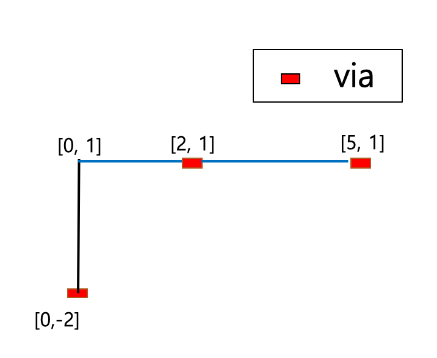

route() method#
- Design.route(grid, mn, direction=None, via_tag=None)[source]#
Create wire object(s) for routing.
- Parameters
grid (laygo2.object.grid.RoutingGrid) – The placement grid where the wire is placed on.
mn (list(numpy.ndarray)) – The list containing two or more mn coordinates to be connected.
direction (str, optional.) – None or “vertical” or “horizontal”. The direction of the routing object.
via_tag (list(Boolean), optional.) – The list containing switches deciding whether to place via at the edges.
- Returns
The generated routing object(s). Check the example code in laygo2.object.grid.RoutingGrid.route for details.
- Return type
Examples
>>> dsn = Design(name='mycell', libname="testlib") >>> mygrid = grids[“routing_23_cmos”] >>> mn_list = [[0, -2], [0, 1], [2, 1], [5,1] ] >>> route = dsn.route(grid=mygrid, mn=mn_list, via_tag=[True, None, True, True]) >>> print(route) [<laygo2.object.physical.VirtualInstance object>, <laygo2.object.physical.Rect object>, <laygo2.object.physical.Rect object>, <laygo2.object.physical.VirtualInstance object>, <laygo2.object.physical.Rect object>, <laygo2.object.physical.VirtualInstance object>]
See also
Notes
Reference in Korean: 추상 좌표 위에 라우팅을 수행 하는 함수. 파라미터 mn(list(numpy.ndarray)): 배선을 수행할 2개 이상의 mn 좌표를 담고 있는 list. direction(str): None or “vertical”; path의 방향을 결정 (수평 or 수직) [optional]. via_tag(list(Boolean)): Path에 via를 형성 할지를 결정하는 switch들을 담고 있는 list [optional]. 반환값 list: 생성된 routing object들을 담고 있는 list.
{kind=link}